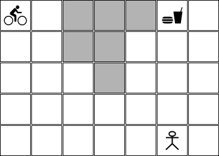
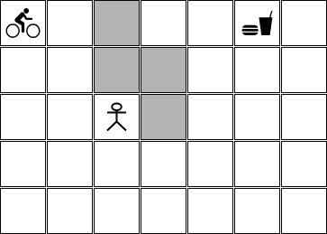
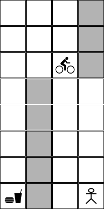
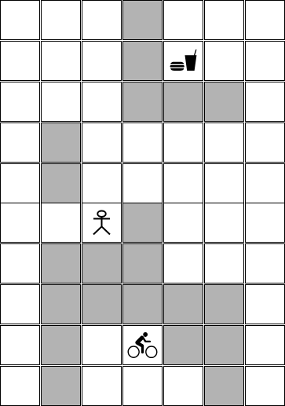

Planejando a rota para um entregador
Neste projeto você deverá implementar um agente que é capaz de ir de um lugar até outro em um mapa, buscar uma encomenda e entregá-la ao seu destinatário. Este agente está andando de bicicleta ou moto e sabe executar as seguintes ações:
- ir para frente: ao executar esta ação o agente avança uma casa na direção que ele está olhando;
- virar para a esquerda: ao executar esta ação o agente muda a direção que ele está olhando para a esquerda e não avança nenhuma casa;
- virar para a direita: ao executar esta ação o agente muda a direção que ele está olhando para a direita e não avança nenhuma casa;
- pegar a encomenda: ao executar esta ação o agente pega a encomenda que está esperando por ele na casa onde ele está;
- entregar a encomenda: ao executar esta ação o agente entrega a encomenda que ele está carregando na casa onde ele está.
Um exemplo possível de mapa que este agente pode receber é apresentado abaixo:
Mapa 01:

Neste estado inicial:
- o entregador está na posição [0,0],
- o item que deve ser entregue está na posição [0,5],
- o destinatário está na posição [4,5],
- o mapa tem 5 linhas e 7 colunas, e
- existem campos no mapa que estão pintados em cinza e que representam obstáculos.
Cada ação que o agente sabe executar tem custo 1.
Implemente uma solução que ajuda o entregador a tomar a decisão com relação ao melhor plano - aquele plano que faz ele chegar no objetivo com o menor custo.
A solução implementada precisa ser capaz de tratar diversas configurações com diversas dimensões. Por exemplo:
Mapa 02:

Mapa 03:

Mapa 04:

Não existem testes pré-configurados. No entanto, recomenda-se fortemente que você teste a sua implementação nos cenários descritos acima.
A configuração dos mapas não pode ser feita de forma fixa no código. A configuração dos mapas deve ser feita em arquivos de configuração.
Nesta implementação você deve utilizar a biblioteca aigyminsper.
Entrega do projeto
- O projeto como um todo deverá ser feito por equipes com até 3 integrantes.
- O prazo máximo para entrega é 20/03/2024 (quarta-feira) até às 23:30 horas.
- A entrega deverá ser feita via Github Classroom. O link para a entrega é https://classroom.github.com/a/D8WBu3wF.
- Cada equipe deverá entregar todos os arquivos python para o funcionamento da solução, uma arquivo README.md que explica como executar, todos os arquivos de configuração dos mapas e um arquivo de
requirements.txtcom todos os pacotes necessários para a execução do projeto.